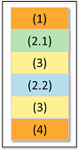

Pattern-based semi-parallel test
SmartRDI provides a pair of APIs to control the semi-parallel logic in the pattern‑based level:
Before using this pair, you must have selected the Allow Parallel check-box and set Site Control to PARALLEL in the Site Control of the test suite property.
Workflow
The following code structure is an example with numbers to indicate the execution
steps.
SEMI_PARALLEL_CONFIG siteGroup;
siteGroup.group(1).add(1).add(3);
siteGroup.group(2).add(2).add(4);
ON_FIRST_INVOCATION_BEGIN();
RDI_BEGIN();
...(1)
RDI_SEMI_PARALLEL_TEST_BEGIN(siteGroup);
if (GET_CURRENT_SEMI_PARALLEL_GROUP_NUMBER() == 1)
...(2.1)
else
...(2.2)
...(3)
RDI_SEMI_PARALLEL_TEST_END();
...(4)
RDI_END();
ON_FIRST_INVOCATION_END();
rdi.id("id1").get...();The following figure shows the execution sequence for semi-parallel tests in the pattern‑based mode in comparison with the test block level.

SmartRDI code structure
The following code indicates the structure of SmartRDI code for semi-parallel tests in the pattern‑based mode.
SEMI_PARALLEL_CONFIG semiparallel;
semiparallel.group(1).add(1).add(3);
semiparallel.group(2).add(2).add(4);
ON_FIRST_INVOCATION_BEGIN();
CONNECT();
rdi.dc().pin("PVI8").vForce(2).execute();
RDI_BEGIN();
rdi.func().label("TestMode_Enable").execute();
rdi.wait(1 ms);
RDI_SEMI_PARALLEL_TEST_BEGIN(semiParallel)
if (GET_CURRENT_SEMI_PARALLEL_GROUP_NUMBER() == 1)
rdi.pmux().pin("010102").selectOn().execute();
else
rdi.pmux().pin("010101").selectOn().execute();
rdi.dc("semi").pin("PVI8").vMeas().execute();
RDI_SEMI_PARALLEL_TEST_END();
rdi.func().label("TestMode_disable").execute();
RDI_END();
rdi.dc().pin("PVI8").disconnect().execute();
ON_FIRST_INVOCATION_END();
rdi.id("semi").getValue();
Note The
SEMI_PARALLEL_CONFIG setup for specific test actions
cannot be changed dynamically between multiple executions.